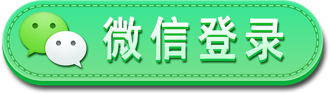

<!DOCTYPE html>
<html lang="en">
<head>
    <meta charset="UTF-8">
    <meta name="viewport" content="width=device-width, initial-scale=1, maximum-scale=1, user-scalable=no">
    <title>login</title>
    <script src="../js/yang_set_rem.js"></script>
    <link rel="stylesheet" href="../css/login.css">
    <script src="../js/jquery.js"></script>
    <script src="http://res.wx.qq.com/connect/zh_CN/htmledition/js/wxLogin.js"></script>
</head>
<body>


<div class="footLogin">
    <div class="headerLoginLogos"></div>
    <div class="footerLoginWxs"><a href="" id="aLoginWx"></a>
        <div class="checkText">
            <input type="checkbox" checked id="check">  登录注册表示同意用户协议与隐私条款
        </div>
    </div>
</div>

<script>
    //checked
    var check = document.getElementById('check');
    check.onclick=function () {
        if (check.checked==true) check.checked!=true;
        if (check.checked!=true) check.checked==true;
        console.log(check.checked)
    };
    //wxLogin
    var wx = document.getElementById('wxLg');
    var aLoginWx = document.getElementById('aLoginWx');
    wx.onclick=function () {
        console.log(window.location.href);
        if(check.checked==true){
            //跳转微信登录页
            console.log('success,the checked is true!');
            //跳转扫一扫下的微信登录页面
            aLoginWx.href = './wxRedirect.html'
        }else{
            console.log('error,the checked is flase!');
            alert('请勾选用户协议与隐私条款')
            aLoginWx.href = ''
        }
    };

    //调微信接口 https://api.weixin.qq.com/sns/oauth2/access_token?appid=APPID&secret=SECRET&code=CODE&grant_type=authorization_code
    //    var xhr = new XMLHttpRequest();
    //    xhr.setRequestHeader("Content-type","text/plain;charset=UTF-8");
    //    xhr.open('post', 'https://api.weixin.qq.com/sns/oauth2/access_token?appid=APPID&secret=SECRET&code=CODE&grant_type=authorization_code' );
    //    xhr.send('name=fox&age=18');
    //    xhr.onreadystatechange = function () {
    //        if (xhr.readyState == 4 && xhr.status == 200) {
    //            console.log(xhr.responseText);
    //        }
    //    };
    //请求微信获取code
    function wxLoginGetCode() {

    }


//    $.ajax({
//        url:'',
//        dataType:'',
//        data:{},
//
//    })


</script>


</body>
</html>